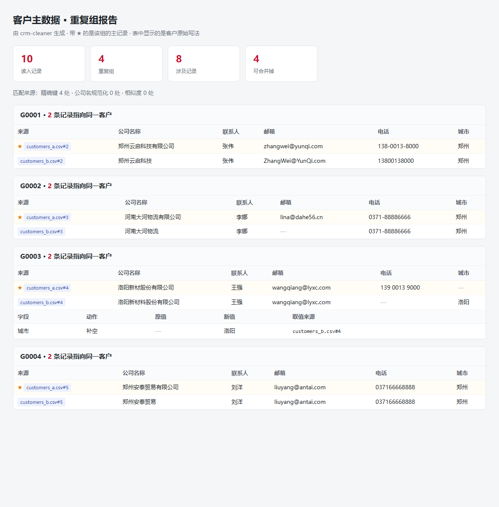

CRM 上线、数据迁移的时候，客户数据永远是脏的。这个工具把同一家公司的不同写法认出来、合并掉， 并且告诉你每一步改了什么、取的值从哪个文件来——改完能交差，不是改完说不清。
同一个客户，几个写法：郑州云启科技有限公司 / 郑州云启科技 / 郑州云启科技（郑州）。
邮箱大小写混写（ZhangWei@YunQi.com），电话带横杠、空格、括号、国家码。
不同系统导出的表，列名不一样：CRM 叫「公司名称」，Excel 台账叫「客户名称」，客服系统叫「客户全称」。
迁移做完，没人能回答「到底合并了哪些、改了哪个字段」——因为改了没人兜底。
不假设各来源列名一致。规则文件里给每个逻辑字段配一串候选名，工具有按文件分别认领。
三层从「绝对可靠」到「可能相似」：精确键（归一化后的邮箱或电话）→ 规范化（公司名去掉有限公司/Ltd. 等）→ 相似度（difflib ≥ 0.88）。
A 和 B 邮箱相同、B 和 C 公司名相同 → A、B、C 是同一家。用并查集合并并加路径压缩，避免重复不是一对一的。
输出主数据 + 重复组 HTML 报告 + 字段级变更日志——每一处取值都能追到来自哪个文件的第几行。

| 层 | 规则 | 为什么 |
|---|---|---|
| 1 · 精确键 | 归一化后的邮箱或电话完全相同 | 最可靠，几乎不误判 |
| 2 · 规范化 | 公司名去掉「有限公司 / Ltd. / Inc.」等后缀后相同 | 能抓到写法差异，但抓不到用词差异 |
| 3 · 相似度 | difflib 相似度 ≥ 0.88 | 兜底。洛阳新材 vs 洛阳新材料 = 0.889 |
单比一层都会出事：只比邮箱会漏掉没填邮箱的；只比公司名抓不到后缀差异；只比相似度误合并率高、还慢。 0.88 这个阈值是把示例数据里的误判和漏判都压到 0 之后定的。
# 零第三方依赖，Python 3.11+ 直接跑 git clone https://github.com/Cix1125/crm-cleaner.git cd crm-cleaner # 用自带的示例数据试一下（2 份表，10 条记录） python -m crm_cleaner examples/ --config examples/config.toml # 结果：读入 10 条 → 4 组重复 → 合并后 6 条 # 输出：主数据 CSV、重复组 HTML 报告、字段级变更日志 # 跑测试 python -m unittest discover -s tests